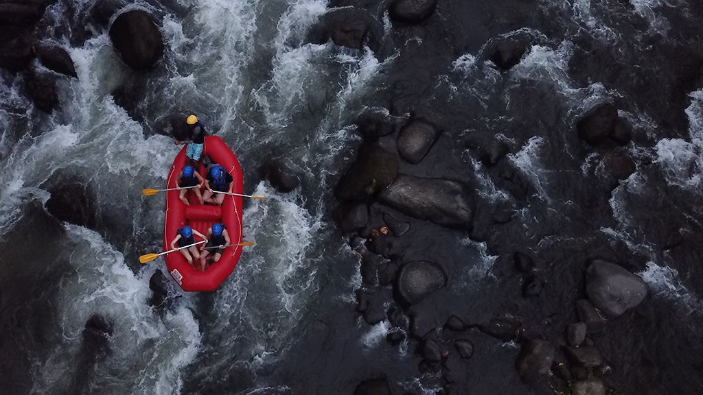

White Water Wasatch Rafting

Experience the thrill of Utah's rivers with White Water Wasatch Rafting.
Our experienced guides provide unforgettable adventures for families,
friends, and groups of all skill levels. Whether you are looking for
exciting rapids, beautiful scenery, or a new outdoor challenge, we are
here to make your rafting trip safe, fun, and memorable.
History
White Water Wasatch Rafting began with a passion for exploring Utah's
incredible rivers and sharing those experiences with others. What
started as a handful of friends navigating the rapids grew into a
full-service outfitter serving guests from around the world.
Over the years, we have helped thousands of guests discover the
excitement of white water rafting while building lasting memories
along the way. Our team combines local knowledge, professional
training, and a love for adventure to create trips that people
return to year after year.